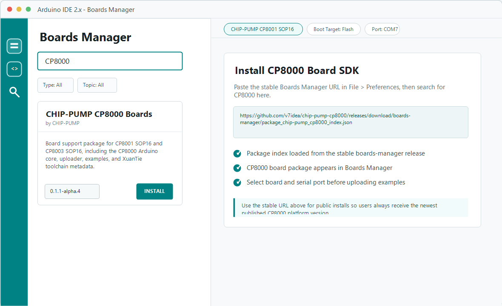

Preferences を開く
Arduino IDE で File > Preferences を開き、Additional Boards Manager URLs を探します。
CHIP-PUMP CP8000 Boards Manager URL を Arduino IDE 2.x に追加すると、CP801X-Mini の board package、ツールチェーン、uploader をインストールできます。
https://github.com/v7idea/chip-pump-cp8000/releases/download/boards-manager/package_chip-pump_cp8000_index.json

Arduino IDE で File > Preferences を開き、Additional Boards Manager URLs を探します。
上記の固定 URL を入力欄に貼り付けます。ほかの URL がある場合は、カンマまたは改行で区切ってください。
Tools > Board > Boards Manager を開き、CP8000 を検索して CHIP-PUMP CP8000 Boards をインストールします。
Tools > Board から CP801X-Mini を選び、正しい serial port を選択してサンプルをアップロードします。
C:\Users\<USER>\AppData\Local\Arduino15\package_chip-pump_cp8000_index.json
C:\Users\<USER>\AppData\Local\Arduino15\package_chip-pump_cp8000_index.json.sig
C:\Users\<USER>\AppData\Local\Arduino15\staging\packages\chippump-cp8000-*.tar.gz$arduino15 = Join-Path $env:LOCALAPPDATA "Arduino15"
Remove-Item "$arduino15\package_chip-pump_cp8000_index.json" -ErrorAction SilentlyContinue
Remove-Item "$arduino15\package_chip-pump_cp8000_index.json.sig" -ErrorAction SilentlyContinue
Remove-Item "$arduino15\staging\packages\chippump-cp8000-*.tar.gz" -ErrorAction SilentlyContinueArduino15 ディレクトリ全体は削除しないでください。ほかのインストール済みボードやパッケージにも影響します。
pyserial が必要です。0.1.1 以降、serial port が必要な uploader コマンドは pyserial の自動インストールを試みます。管理された環境やオフライン環境では、事前に手動インストールしてください。py -3 -m pip install pyserialpython3 -m pip install pyserialarduino-cli core update-index \
--additional-urls https://github.com/v7idea/chip-pump-cp8000/releases/download/boards-manager/package_chip-pump_cp8000_index.json
arduino-cli core install chippump:cp8000 \
--additional-urls https://github.com/v7idea/chip-pump-cp8000/releases/download/boards-manager/package_chip-pump_cp8000_index.json